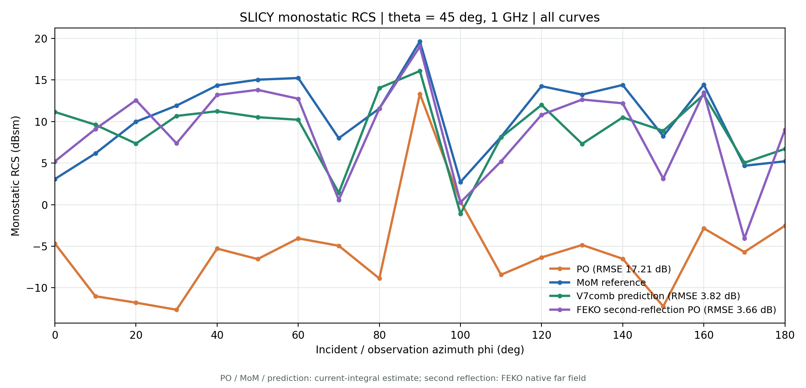
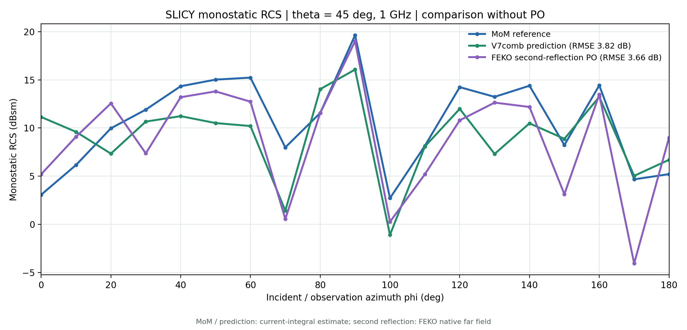
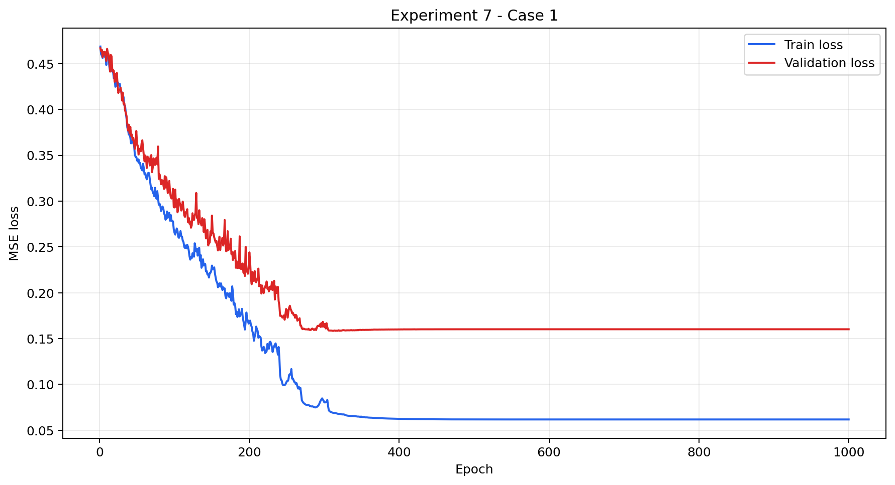
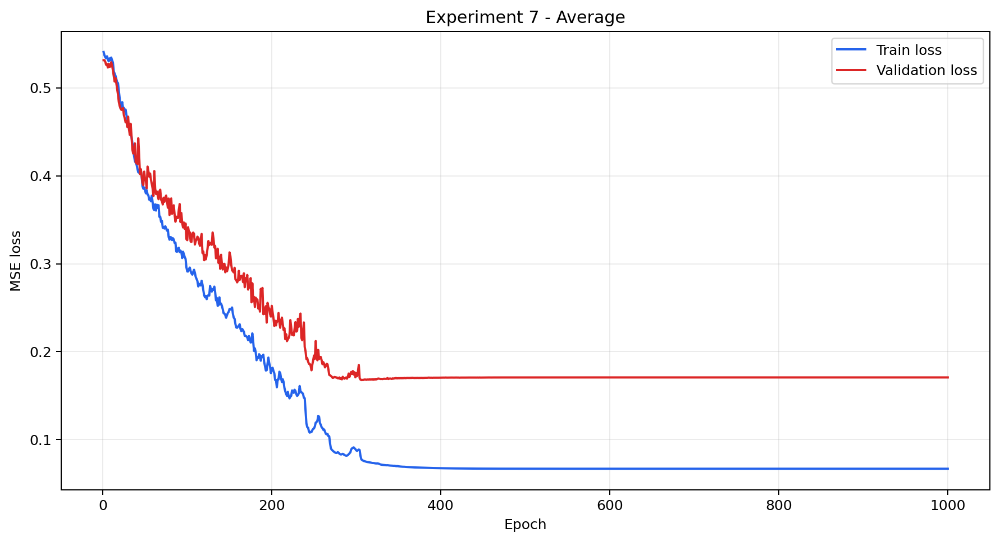
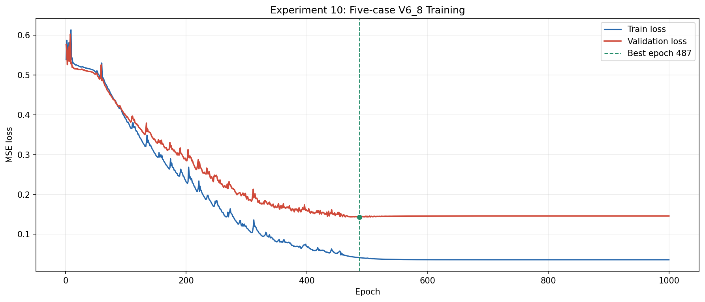
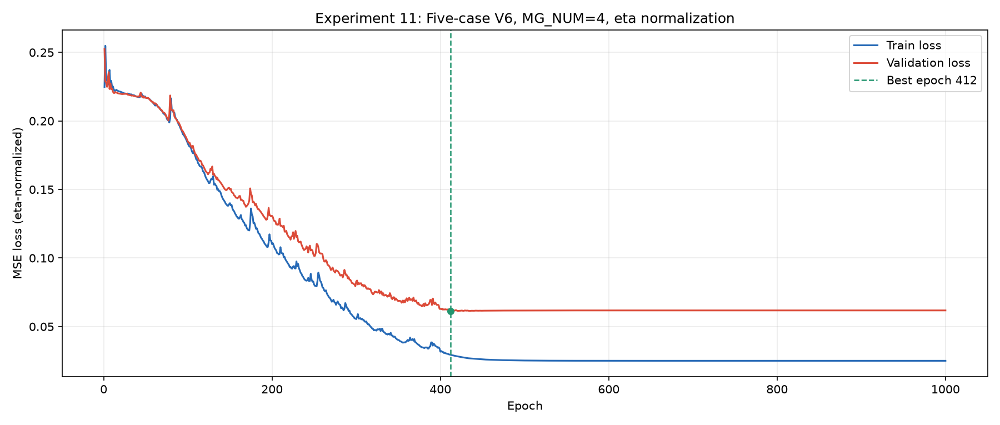

训练记录
脚本区别
| 脚本 | LocalExchange / DownBlock | BiasTransformerBlock | MGTransformer 多次调用 | MG 后 LocalExchange 多次调用 | 当前默认 MG_num | checkpoint | 注释 |
|---|---|---|---|---|---|---|---|
train.py |
Post-Norm | Pre-Norm | 共享参数 | 共享参数 | 2 | case1_1ghz_best.pt |
基础版本，作为后续结构实验的对照。 |
trainV2.py |
Pre-Norm | Pre-Norm | 共享参数 | 共享参数 | 2 | case1_1ghz_bestV2.pt |
将主要残差块改为 Pre-Norm，用于验证 Pre-Norm 对深层训练和梯度传播的作用。 |
trainV3.py |
Post-Norm | Pre-Norm | 每次独立参数 | 每次独立参数 | 2 | case1_1ghz_bestV3.pt |
保留 Post-Norm，但让多层 MGTransformer 使用独立参数，用于验证参数不共享的作用。 |
trainV4.py |
Pre-Norm | Pre-Norm | 每次独立参数 | 每次独立参数 | 3 | case1_1ghz_bestV4.pt |
同时采用 Pre-Norm 和独立参数。 |
trainV5.py |
Pre-Norm | Pre-Norm | 共享参数 | 共享参数 | 2 | case1_1ghz_bestV5.pt |
由 V2 扩展，网络不变；依次训练 case1、case2，以平均验证loss选择best。 |
trainV6.py |
Pre-Norm | Pre-Norm | 共享参数 | 共享参数 | 2 | case1_1ghz_bestV6.pt |
网络沿用V2；每个epoch对全部case样本累计梯度，再统一执行一次optimizer step，以各case平均验证loss选择best。 |
trainV7.py |
Pre-Norm | Pre-Norm | 共享参数 | 共享参数 | 4 | case1_1ghz_bestV7_4_eta.pt |
沿用V6主干与训练方式；新增14维入射源支路和10维G0几何节点MLP，两者均输出乘性与加性调制，在入口注入主干；几何缓存复用一次前向内的固定几何量与Green核计算。 |
训练结果
二个 Case 训练
| 序号 | 脚本 | MG_num | Round | Epoch | 统一lr | train loss (case1) | 验证loss (case1) | train loss (case2) | 验证loss (case2) |
|---|---|---|---|---|---|---|---|---|---|
| PO baseline | 0.4651140 | 0.4716737 | 0.6114222 | 0.5977157 | |||||
| 1 | train.py |
1 | 50 | 100 | True | 0.34 | 0.43 | ||
| 2 | trainV2.py |
2 | 20 | 100 | True | 0.2556597 | 0.3124883 | 0.2644765 | 0.3346760 |
| 3 | trainV3.py |
2 | 20 | 100 | True | 0.3473585 | 0.3977745 | 0.2788116 | 0.3514389 |
| 4 | train.py |
1 | 50 | 100 | True | 0.3161856 | 0.3687931 | 0.4054257 | 0.4521745 |
| 5 | trainV2.py |
3 | 50 | 100 | True | 0.1185857 | 0.2083498 | 0.1794636 | 0.2775576 |
| 6 | trainV4.py |
3 | 6 | 100 | True | 0.1014225 | 0.1943720 | 0.1743607 | 0.2596381 |
| 7 | trainV5.py |
4 | 2 | 1000 | True | 0.06171694 | 0.1601393 | 0.07219689 | 0.1813488 |
三个 Case 训练
| 序号 | 脚本 | MG_num | Epoch | 最佳Epoch | train loss (case1) | 验证loss (case1) | train loss (case2) | 验证loss (case2) | train loss (case3) | 验证loss (case3) | 平均train loss | 平均验证loss |
|---|---|---|---|---|---|---|---|---|---|---|---|---|
| PO baseline | 0.4651140 | 0.4716737 | 0.6114222 | 0.5977157 | 0.5367418 | 0.5056661 | 0.5377593 | 0.5250185 | ||||
| 8 | trainV6.py |
4 | 3000 | 462 | 0.04296171 | 0.1226621 | 0.05313023 | 0.1357329 | 0.03616315 | 0.1053813 | 0.04408503 | 0.1212588 |
五个 Case 训练
| 序号 | 脚本 | MG_num | Epoch | 最佳Epoch | case1 train/val | case2 train/val | case3 train/val | case4 train/val | case5 train/val | 平均train/val |
|---|---|---|---|---|---|---|---|---|---|---|
| PO baseline | 0.4651140 / 0.4716737 | 0.6114222 / 0.5977158 | 0.5367418 / 0.5056661 | 0.6407698 / 0.6255563 | 0.3923243 / 0.3864167 | 0.5292744 / 0.5174057 | ||||
| 9 | trainV6.py |
4 | 1000 | 494 | 0.04624768 / 0.1362400 | 0.05960255 / 0.1733138 | 0.03895196 / 0.1031478 | 0.06664200 / 0.1973725 | 0.04865366 / 0.1385167 | 0.05201957 / 0.1497182 |
| 10 | trainV6.py (V6_8) |
8 | 1000 | 487 | 0.03587838 / 0.1321653 | 0.04743682 / 0.1579915 | 0.02917274 / 0.1024080 | 0.05391008 / 0.1962207 | 0.03893700 / 0.1281163 | 0.04106700 / 0.1433804 |
五个 Case 训练（eta 固定归一化）
序号11沿用 V6 网络和训练方式，工作站设置 MG_num=4，未加入 V7 的入射源支路或几何编码支路。
序号12使用 V7，MG_num=4；在相同 eta 数据集上增加入射源与几何支路。入射源输入为传播方向3维、方向与法向外积9维、相位的cos/sin共2维；几何输入为中心3维、法向3维、面积1维，以及G0邻域、所属G1/G2邻域的法向变化各1维。两条MLP各输出512维，拆为两组256维，按 h = h + h * gamma + beta 依次注入G0，不在每轮MG中重复注入。
数据集由 dataset_case1to5_1ghz.pt 改为 dataset_case1to5_1ghz_eta.pt：原来使用每个样本的 PO 平均幅值作为 scale，电流输入为 J_PO / scale，标签为 (J_MoM - J_PO) / scale；现在统一使用 eta0=376.730313668，电流输入为 eta0 * J_PO，标签为 eta0 * (J_MoM - J_PO)，保存的物理恢复系数 scale=1/eta0=0.002654418727985。
5个 case 共90个样本的几何、聚类、几何边、耦合边、频率和角度均保持不变。每个 case 使用15个训练角度，验证角度为 phi=50/110/170 deg。由于归一化不同，本节 MSE 不应与序号9、10的 MSE 直接比较。
下表各 case 和平均值均使用各自最佳 checkpoint、MG_num=4 在本地重新评估，PO baseline 也按 eta 数据集重算。序号11取第412轮，序号12取第705轮。Checkpoint 保存的是当轮参数更新前累计的 train loss，而下表为更新参数后固定最佳模型的复算值：序号11的日志/复算平均 train loss 为 0.02944848 / 0.02929179，序号12为 0.00669073 / 0.00605494。复算平均验证 loss 与各自 checkpoint 一致。
| 序号 | 脚本 | MG_num | Epoch | 最佳Epoch | case1 train/val | case2 train/val | case3 train/val | case4 train/val | case5 train/val | 平均train/val |
|---|---|---|---|---|---|---|---|---|---|---|
| PO baseline（eta） | 0.21504844 / 0.21760768 | 0.25583449 / 0.25575049 | 0.25064789 / 0.24167807 | 0.21447395 / 0.21316708 | 0.17532636 / 0.17410488 | 0.22226623 / 0.22046164 | ||||
| 11 | trainV6.py (V6_4_eta) |
4 | 1000 | 412 | 0.02903799 / 0.06075905 | 0.03309569 / 0.06604467 | 0.02512861 / 0.05116812 | 0.03215844 / 0.07281842 | 0.02703823 / 0.05606414 | 0.02929179 / 0.06137088 |
| 12 | trainV7.py (V7_4_eta) |
4 | 1000 | 705 | 0.00545363 / 0.02793141 | 0.00705845 / 0.03033356 | 0.00469026 / 0.02227455 | 0.00724584 / 0.04956882 | 0.00582652 / 0.03307219 | 0.00605494 / 0.03263611 |
序号11参数文件：checkpoints/case1_1ghz_bestV6_4_eta.pt；曲线数据：checkpoints/loss_historyV6_4_eta.npy。序号12参数文件：checkpoints/case1_1ghz_bestV7_4_eta.pt；曲线数据：checkpoints/loss_historyV7_4_eta.npy。两份曲线均包含1000轮平均 train/val loss；序号12的 checkpoint 平均验证 loss 为 0.03263610，与本地复算值仅有约 1.7e-9 的浮点差异。
序号9、11、12的统一电流相对误差
统一使用 error = ||J_pred - J_MoM||_F / ||J_MoM||_F * 100%，包含所有面元、xyz三个方向的实部和虚部，不做面积加权，与电流可视化的相对误差定义一致。物理电流按各数据集的 scale 恢复：J_pred = (X[:, 7:13] + delta) * scale，J_MoM = (X[:, 7:13] + Y) * scale；同一样本的公共缩放系数在比值中抵消，因此两种归一化可以直接比较。
序号9使用第494轮最佳参数和原数据集，序号11使用第412轮最佳参数和 eta 数据集，序号12使用第705轮最佳参数和同一 eta 数据集，三者均为 MG_num=4。每个样本先计算相对误差，再分别对每个 case 的15个训练角度和3个验证角度取平均，最后对5个 case 等权平均；不是把所有样本的面元拼接后计算一个范数。序号9、11沿用已完成的复算结果，序号12按相同口径补算。下表单位均为百分比，越低越好。
| 序号 / 基准 | case1 train/val | case2 train/val | case3 train/val | case4 train/val | case5 train/val | average train/val |
|---|---|---|---|---|---|---|
| PO base error | 74.77 / 75.11 | 78.89 / 78.93 | 78.09 / 77.40 | 78.15 / 78.06 | 71.36 / 71.28 | 76.25 / 76.16 |
| 9 | 23.73 / 38.76 | 24.98 / 41.76 | 21.07 / 34.43 | 25.31 / 42.95 | 25.32 / 41.80 | 24.08 / 39.94 |
| 11 | 27.59 / 39.08 | 28.78 / 40.55 | 24.86 / 35.64 | 30.25 / 45.37 | 28.62 / 41.23 | 28.02 / 40.38 |
| 12 | 11.94 / 25.50 | 13.23 / 27.48 | 10.74 / 23.23 | 14.37 / 37.18 | 13.26 / 31.60 | 12.71 / 29.00 |
本次运行中，序号11的平均验证相对误差比序号9高约0.44个百分点，训练相对误差高约3.94个百分点。Case2、case5验证误差降低，其余三个case升高；eta 归一化后的 MSE 数值更低，不等于物理电流相对误差更低。
序号12的五个case训练与验证相对误差均低于序号9、11。平均验证误差降为29.00%，比序号9低10.94个百分点（相对降低27.39%），比序号11低11.38个百分点（相对降低28.17%）。这是V7整体方案的改善，尚不能将收益单独归因于入射源支路或几何支路。
消融实验
序号13、14使用 ablation_study.py，均加载序号12的 case1_1ghz_bestV7_4_eta.pt，MG_num=4，使用同一 eta 数据集和相同的 train/val 角度划分。只关闭指定支路后前向评测一遍，没有重新训练、微调或更新参数。表内使用与前文相同的复电流相对L2 error，单位为百分比，按 train / val 展示，越低越好。每个角度先计算error，再分别对各case的训练/验证角度取平均，最后对5个case等权平均。
| 序号 / 基准 | illustration | case1 train/val | case2 train/val | case3 train/val | case4 train/val | case5 train/val | average train/val |
|---|---|---|---|---|---|---|---|
| PO base error | - | 74.77 / 75.11 | 78.89 / 78.93 | 78.09 / 77.40 | 78.15 / 78.06 | 71.36 / 71.28 | 76.25 / 76.16 |
| 12 | 未关闭 | 11.94 / 25.50 | 13.23 / 27.48 | 10.74 / 23.23 | 14.37 / 37.18 | 13.26 / 31.60 | 12.71 / 29.00 |
| 13 | 关闭 geo 支路 | 72.63 / 73.12 | 75.15 / 74.95 | 71.79 / 71.72 | 86.79 / 87.69 | 73.95 / 72.94 | 76.06 / 76.08 |
| 14 | 关闭 src 支路 | 61.58 / 63.71 | 61.75 / 62.71 | 60.30 / 64.13 | 69.06 / 68.92 | 58.50 / 59.19 | 62.24 / 63.73 |
| 15 | 关闭 G1/G2 的 BiasTransformerBlock | 77.00 / 78.54 | 82.14 / 83.41 | 79.53 / 79.29 | 78.62 / 81.88 | 79.04 / 79.34 | 79.27 / 80.49 |
| 16 | 关闭 G1/G2 的 CoupleExchange | 63.17 / 64.30 | 76.82 / 77.33 | 66.92 / 66.52 | 75.42 / 76.93 | 63.85 / 64.62 | 69.23 / 69.94 |
结果文件：序号13为 checkpoints/ablation_study/source1_geo0_MG4_eta_error.json，序号14为 checkpoints/ablation_study/source0_geo1_MG4_eta_error.json。这两组反映已训练V7对支路的依赖，不等同于关闭支路后重新训练的结果。
序号15、16沿用序号12的 checkpoint、eta 数据集、MG_num=4 和相同误差口径；source 与 geo 支路均开启，只在每次 MGTransformer 调用中分别关闭 G1/G2 的一条交流支路，不重新训练。两条支路都从各层原始输入计算，关闭 BiasTransformerBlock 时保留原始特征及 CoupleExchange。结果文件分别为 checkpoints/ablation_study/bias0_cplx1_MG4_eta_error.json 和 checkpoints/ablation_study/bias1_cplx0_MG4_eta_error.json。相对序号12的平均验证误差 29.00%，两组分别升至 80.49% 和 69.94%；这只能说明已训练的 V7 权重对两条支路都敏感。关闭任一支路后若重新初始化或微调，其误差能否重新降低、降低到什么程度，尚未测试，不能根据本表断言该支路在可重新训练的网络中不可缺少。
全角度数据集训练
序号17-19使用 trainV7AllAngle.py、MG_num=4 和 dataset_case1to5_allangle_eta.pt；序号17、19从先前的 V7 参数初始化，序号18随机初始化。五个 case 各有171个训练角度和24个验证角度，总计855个训练样本、120个验证样本；计划每5个样本更新一次。与上面的18角度数据集不同，本节 MSE 不宜直接作为同一验证集上的改进量比较。红叉表示训练循环存在梯度未按批次清零的问题，结果不用于判断模型能力。
| 序号 | 初始化 | 计划Epoch | 已完成Epoch | 最佳Epoch | train PO baseline | 最佳轮train loss | val PO baseline | 最佳val loss | 末轮train/val loss |
|---|---|---|---|---|---|---|---|---|---|
| 17 ✘ | 加载 V7 参数 | 1000 | 301 | 173 | 0.1953250 | 0.1953198 | 0.1903792 | 0.1903693 | 0.1953179 / 0.1903699 |
| 18 ✘ | 随机初始化 | 1000 | 31 | 19 | 0.1953250 | 0.1953201 | 0.1903792 | 0.1903682 | 0.1953198 / 0.1903695 |
| 19 | 加载 V7 参数；修正梯度清零 | 1000 | 464 | 204 | 0.1953249 | 0.001554014 | 0.1903792 | 0.01475297 | 0.001094989 / 0.01486498 |
序号17第2轮 train loss 曾升至 1.066473e+06；序号18首轮 train loss 达 2.154771e+05。两次训练均在每个 epoch 开头清零梯度，但每5个样本执行 optimizer.step() 后没有清零，后续批次重复累积了旧梯度，因此此前贴近 PO 基线的结果无效。序号19修正后，最佳验证 loss 在第204轮达到 0.01475297，比验证集 PO 基线 0.1903792 低约92.25%；第204轮之后到日志截止的第464轮没有再刷新最佳值，训练 loss 继续下降而验证 loss 基本持平。表中最佳轮 train loss 是当轮训练日志值，末轮 loss 不是最佳 checkpoint 的复算值；本实验尚未计算电流相对误差。
多变体 V7 comb（序号20）
trainV7A.py 从全角度 V7 checkpoint 初始化，在 datasetXVXA.pt 的 3420 个样本训练；datasetVVVA.pt 与 datasetVVCA.pt 各 270 个样本合并为 540 个验证样本，并用于选择最佳参数。最佳文件为 checkpoints/case1_1ghz_bestV7_eta_comb.pt，第 100 轮，训练修正量 MSE 0.004052070，验证修正量 MSE 0.038437246。loss_historyV7_eta_comb.npy 包含 100 轮的训练/验证 loss，最低验证 loss 出现在第 100 轮。
| 序号 | 脚本 | MG_num | 初始化 | 训练集 | 验证集 | Epoch | 最佳Epoch | 最佳轮train loss | 最佳val loss |
|---|---|---|---|---|---|---|---|---|---|
| 20 | trainV7A.py |
4 | 全角度 V7 checkpoint | XVXA，3420 个样本 | VVVA + VVCA，540 个样本 | 100 | 100 | 0.004052070 | 0.038437246 |
使用该 checkpoint、MG_num=4，在上述 540 个验证样本上纯推理复算。每个样本按完整六维复电流计算 $\|J_{\rm pred}-J_{\rm MoM}\|_F/\|J_{\rm MoM}\|_F$，先求样本误差，再取平均；PO 基线同口径。归一化修正量 MSE 是 $\operatorname{mean}[(\Delta_{\rm pred}-Y)^2]$。结果如下：
| 分组 | 样本数 | PO 相对误差 | 预测相对误差 | 修正量 MSE |
|---|---|---|---|---|
| VVVA（验证几何、V 角度） | 270 | 72.04% | 30.18% | 0.038463847 |
| VVCA（验证几何、C 角度） | 270 | 71.86% | 30.20% | 0.038410645 |
| 合并验证集 | 540 | 71.95% | 30.19% | 0.038437246 |
两组各有五个 case、每 case 54 个样本，因此合并样本平均与五个 case 等权平均相同。VVCA 已进入训练时的验证选择，不能视为独立测试集。当前没有复算 3420 个训练样本的电流相对误差；训练 loss 是 checkpoint 保存的训练日志值。复算的详细分 case 结果见 checkpoints/v7comb_error.json。
同一 V7comb checkpoint 在独立的 SLICY 几何上纯推理：$\theta=45^\circ$、$\phi=0^\circ:10^\circ:180^\circ$ 共 19 个方向，每方向 74,762 个三角元。逐方向复电流相对误差平均：PO 65.03%、预测 53.12%；归一化修正量 MSE 0.09888287。这是新几何的泛化观察；页面电流颜色为 $\|\operatorname{Re}J\|_2$，RCS 是三角元电流远场积分估算，不是 FEKO 原生远场。
同一组 19 个方向另外使用 FEKO 二次反射 PO 直接导出了原生远场。以电流积分得到的 MoM 单站 RCS 为参照，dBsm RMSE 分别为：单次 PO 17.21 dB、V7comb 预测 3.82 dB、FEKO 二次反射 3.66 dB；二次反射比预测再低 0.16 dB。需要注意，PO、MoM 和预测曲线来自三角元复电流远场积分，二次反射曲线来自 FEKO 原生远场，计算口径不同，因此该比较主要用于观察趋势。
完整对比：PO、MoM、V7comb 预测与 FEKO 二次反射。

重点对比：去除 PO 后比较 MoM、V7comb 预测与 FEKO 二次反射。

SLICY addTrain 验证（序号21）
trainV7addTrain.py 以五个旧 CAD 族各一个训练变体和 LayerCircle、LayerCylinder、ThreeAngle 三个新几何组成的 case_addTrain/dataset_transfer_8geom_theta45.pt（8 几何 × 19 方向，共 152 样本）继续训练；caseSLICY/dataset_SLICY.pt 的 19 个方向用于验证并选择最佳参数。因此下表是 SLICY 验证表现，不是未接触的最终测试。最佳 checkpoint 为 checkpoints/case1_1ghz_bestV7_eta_addTrain.pt（第 18 轮）；其保存的 train / val 归一化修正量 MSE 为 0.009177404 / 0.048993025。本地用该权重及 MG_num=4 重新推理得到的 SLICY 逐方向平均修正量 MSE 为 0.048993023，与 checkpoint 验证 loss 的差异是浮点精度所致。
下表使用同一份 SLICY 数据：$\theta=45^\circ$、$\phi=0^\circ:10^\circ:180^\circ$。每个方向的误差为完整六维复电流的 $\|J-J_{\rm MoM}\|_F/\|J_{\rm MoM}\|_F\times100\%$，PO 列以 $J=J_{\rm PO}$ 计算；V7comb 和 addTrain 列分别使用两份最佳权重。每行先算相对误差，末行再对 19 行等权平均。降低量为 V7comb 减 addTrain 的百分点，越大表示改善越多。
| $\phi$ | PO error | V7comb 预测 error | addTrain 预测 error | 预测误差降低（百分点） |
|---|---|---|---|---|
| 0° | 63.73% | 56.20% | 38.13% | 18.07 |
| 10° | 63.76% | 54.79% | 36.71% | 18.08 |
| 20° | 64.33% | 54.76% | 37.20% | 17.56 |
| 30° | 65.19% | 55.07% | 37.11% | 17.96 |
| 40° | 66.19% | 54.92% | 37.27% | 17.65 |
| 50° | 65.77% | 52.97% | 37.52% | 15.45 |
| 60° | 65.41% | 51.78% | 36.28% | 15.50 |
| 70° | 65.10% | 51.38% | 35.81% | 15.57 |
| 80° | 65.55% | 51.98% | 37.42% | 14.56 |
| 90° | 67.01% | 51.83% | 39.12% | 12.71 |
| 100° | 65.73% | 50.98% | 37.14% | 13.84 |
| 110° | 64.68% | 49.62% | 34.60% | 15.02 |
| 120° | 65.32% | 50.71% | 36.76% | 13.95 |
| 130° | 65.90% | 52.26% | 36.73% | 15.53 |
| 140° | 65.60% | 53.25% | 37.97% | 15.28 |
| 150° | 65.01% | 53.19% | 39.01% | 14.19 |
| 160° | 63.99% | 53.69% | 38.17% | 15.52 |
| 170° | 63.51% | 54.81% | 38.07% | 16.74 |
| 180° | 63.80% | 55.12% | 38.66% | 16.46 |
| 逐方向均值 | 65.03% | 53.12% | 37.35% | 15.77 |
PO 列在两次评估中逐方向相同；改变 checkpoint 不改变 PO 基线。addTrain 在 19 个方向的复电流误差均低于 V7comb；逐点结果和计算来源见 visualization/slicy_comb/summary.json 与 visualization/slicy_addTrain_validation/summary.json。同口径单站 RCS dBsm RMSE（相对 MoM）为 PO 17.21 dB、V7comb 预测 3.82 dB、addTrain 预测 4.02 dB；电流误差改善并未使该 RCS 指标同步改善。两者的 PO/MoM/预测 RCS 都是三角元电流远场积分估算。
caseOther 未见几何泛化（序号22）
caseOther 目前包含 9 个独立目标：CombFlare、Satellite2、Satellite3、Satellite4、SatelliteCylinder、SatelliteSphere、PlaneF22、TrihedralAngle、Rocket。各目标均为 1 GHz、同一固定极化、统一 $\eta_0$ 归一化，使用 $\theta=45^\circ$、$\phi=0^\circ:10^\circ:180^\circ$ 的 19 个 MoM/PO 配对方向。它们未参与 V7comb 或 addTrain 的训练与验证选模；以下是新几何泛化观察，不是先验封存的最终测试。Satellite2 是原 caseOther/satellite 目录改名后的同一几何；PlaneF22 使用当前约 2.45 m 长的缩比网格，不能解释为实际尺寸 F-22。各目标网格、方向、电流归一化与 checkpoint 信息以各自数据集、归档文件和评估 summary.json 为准。
两份模型分别为 checkpoints/case1_1ghz_bestV7_eta_comb.pt（V7comb，第 100 轮，trainV7A.py）和 checkpoints/case1_1ghz_bestV7_eta_addTrain.pt（addTrain，第 18 轮，trainV7addTrain.py），均用 MG_num=4 纯推理。评估入口为 caseSLICY/export_slicy_visualization.py；本节没有重新训练，也没有新的训练 loss 曲线。每个方向的完整复电流相对误差为 $\|J-J_{\rm MoM}\|_F/\|J_{\rm MoM}\|_F\times100\%$，下表电流指标是 19 个方向的等权平均；RCS 列是同 19 个方向的 dBsm 差值 RMSE，以 MoM 曲线为参照。RCS 全部由三角元复电流积分估算，不是 FEKO 原生远场。两份评估的 PO/MoM 基线已逐点核对一致。下表数值越低越好，RCS 单位为 dB。
| 目标 | 三角元 | PO 电流误差 | V7comb 电流误差 | addTrain 电流误差 | PO RCS RMSE | V7comb RCS RMSE | addTrain RCS RMSE |
|---|---|---|---|---|---|---|---|
| CombFlare | 25,022 | 65.78% | 47.80% | 42.22% | 12.98 | 2.77 | 3.30 |
| Satellite2 | 41,756 | 57.14% | 51.99% | 47.12% | 11.61 | 8.16 | 6.81 |
| Satellite3 | 36,764 | 65.98% | 56.61% | 48.83% | 17.07 | 4.49 | 3.54 |
| Satellite4 | 48,576 | 62.71% | 54.09% | 43.25% | 24.47 | 5.91 | 2.71 |
| PlaneF22 | 11,870 | 68.99% | 63.60% | 61.88% | 8.30 | 5.36 | 6.89 |
| TrihedralAngle | 19,356 | 71.27% | 40.14% | 36.05% | 26.04 | 7.53 | 7.84 |
| Rocket | 40,506 | 60.06% | 54.21% | 49.71% | 8.81 | 6.81 | 4.98 |
| SatelliteCylinder | 51,390 | 55.36% | 56.11% | 44.25% | 11.72 | 6.14 | 4.41 |
| SatelliteSphere | 89,502 | 52.66% | 57.28% | 49.31% | 2.42 | 4.75 | 3.41 |
分类口径：“较好结果”指两份模型在这组方向的平均电流误差和 RCS RMSE 均低于 PO；“较坏结果”指至少一份模型的总体指标高于 PO。分类只描述此批 19 方向的观察，不代表对所有入射方向或目标尺寸的保证。部分“较好”目标仍有个别方向退化，下文保留这些负例。
较好结果
CombFlare 未见几何泛化对比
caseOther/CombFlare/dataset_CombFlare.pt 是 1 GHz、统一 $\eta_0$ 归一化的配对 PO/MoM 数据：25,022 个三角元，$\theta=45^\circ$、$\phi=0^\circ:10^\circ:180^\circ$ 共 19 个方向。CombFlare 没有进入 V7comb 或 addTrain 的训练与验证选模，数据集在两份 checkpoint 之后完成；这里是同一未见几何上的纯推理对照。V7comb 使用 checkpoints/case1_1ghz_bestV7_eta_comb.pt（第 100 轮），addTrain 使用 checkpoints/case1_1ghz_bestV7_eta_addTrain.pt（第 18 轮），均为 MG_num=4。下表沿用上面的完整复电流相对 L2 定义；末行先逐方向计算、再对 19 个方向等权平均。降低量是 V7comb 减 addTrain，单位为百分点。
| $\phi$ | PO error | V7comb 预测 error | addTrain 预测 error | 预测误差降低（百分点） |
|---|---|---|---|---|
| 0° | 69.09% | 53.02% | 45.14% | 7.88 |
| 10° | 65.61% | 52.64% | 44.39% | 8.25 |
| 20° | 64.79% | 52.68% | 45.23% | 7.45 |
| 30° | 64.02% | 50.32% | 45.14% | 5.18 |
| 40° | 65.17% | 46.98% | 43.04% | 3.94 |
| 50° | 66.60% | 45.56% | 41.01% | 4.56 |
| 60° | 66.06% | 43.54% | 39.36% | 4.18 |
| 70° | 65.48% | 42.89% | 39.06% | 3.83 |
| 80° | 65.07% | 42.94% | 39.22% | 3.72 |
| 90° | 65.34% | 42.36% | 39.18% | 3.18 |
| 100° | 64.92% | 42.26% | 38.75% | 3.51 |
| 110° | 65.14% | 42.85% | 38.17% | 4.67 |
| 120° | 66.22% | 45.33% | 39.86% | 5.47 |
| 130° | 66.17% | 46.53% | 41.09% | 5.45 |
| 140° | 65.63% | 47.96% | 43.62% | 4.34 |
| 150° | 63.86% | 50.31% | 45.59% | 4.72 |
| 160° | 65.10% | 51.96% | 43.96% | 8.00 |
| 170° | 65.73% | 53.18% | 44.11% | 9.07 |
| 180° | 69.81% | 54.96% | 46.27% | 8.69 |
| 逐方向均值 | 65.78% | 47.80% | 42.22% | 5.58 |
addTrain 的复电流相对误差在 CombFlare 的 19/19 个方向均低于 V7comb，平均降低 5.58 个百分点；结合 SLICY 验证集上平均降低 15.77 个百分点，这两个几何的电流指标都支持 addTrain 的改善。一个可能的解释是 V7comb 更贴合原有训练几何分布，面对新结构时出现过度适配；在原 checkpoint 上加入 LayerCircle、LayerCylinder、ThreeAngle 三种新几何后，仅用最佳第 18 轮的短程继续训练，就改善了 CombFlare 这一未见几何的复电流预测。不过，这不是过拟合机制的直接证明：新增几何改变了训练分布，且 SLICY 被用于 addTrain 选模，不能将收益单独归因于训练轮数少或原权重过拟合；仍需更多预先封存的新几何验证泛化结论。
同一 19 方向、同一三角元复电流远场积分口径下，以 MoM 为参照的单站 RCS dBsm RMSE 为 PO 12.98 dB、V7comb 2.77 dB、addTrain 3.30 dB。因此 addTrain 虽然在完整复电流误差上更好，RCS RMSE 在此几何上反而比 V7comb 高约 0.525 dB（由未四舍五入值相减）；综合“更好”应限定为以复电流误差为主的评价。逐点来源分别为 visualization/combflare_v7comb_generalization/summary.json 与 visualization/combflare_addTrain_generalization/summary.json；两次评估的 PO/MoM 基线逐点一致。
Satellite2
数据集：caseOther/Satellite2/dataset_satellite.pt，41,756 个三角元。这是原 satellite 目录改名后的目标，评估输出仍沿用 satellite 文件名前缀。下表每行是完整复电流相对 MoM 的误差；降低量为 V7comb 减 addTrain，单位为百分点。
| $\phi$ | PO error | V7comb 预测 error | addTrain 预测 error | 预测误差降低（百分点） |
|---|---|---|---|---|
| 0° | 50.84% | 41.52% | 36.93% | 4.59 |
| 10° | 50.23% | 42.43% | 37.77% | 4.66 |
| 20° | 50.69% | 45.04% | 39.95% | 5.09 |
| 30° | 52.80% | 47.73% | 42.72% | 5.01 |
| 40° | 56.67% | 51.30% | 46.35% | 4.95 |
| 50° | 58.97% | 54.42% | 49.38% | 5.04 |
| 60° | 61.48% | 57.52% | 51.87% | 5.65 |
| 70° | 63.45% | 60.21% | 54.53% | 5.68 |
| 80° | 64.81% | 61.10% | 56.03% | 5.07 |
| 90° | 65.87% | 60.89% | 56.52% | 4.38 |
| 100° | 64.85% | 60.42% | 56.00% | 4.42 |
| 110° | 63.49% | 59.76% | 55.10% | 4.65 |
| 120° | 61.45% | 57.22% | 53.48% | 3.74 |
| 130° | 58.91% | 53.92% | 50.59% | 3.33 |
| 140° | 56.74% | 51.96% | 48.26% | 3.70 |
| 150° | 52.80% | 46.97% | 43.71% | 3.27 |
| 160° | 50.62% | 45.70% | 40.38% | 5.32 |
| 170° | 50.23% | 45.02% | 38.60% | 6.42 |
| 180° | 50.85% | 44.74% | 37.09% | 7.65 |
| 逐方向均值 | 57.14% | 51.99% | 47.12% | 4.88 |
addTrain 的电流误差在 19/19 个方向低于 V7comb。归一化修正量 MSE 的 19 方向均值：V7comb 0.085245、addTrain 0.070440；它与物理电流相对误差不是同一指标。同口径单站 RCS RMSE：PO 11.61 dB、V7comb 8.16 dB、addTrain 6.81 dB。addTrain 的 RCS 单点绝对误差在 12/19 个方向低于 V7comb；整体 RMSE 需按平方差汇总，不能由方向胜出数决定。逐点数据与本地页面分别见 visualization/satellite_v7comb_generalization/summary.json、visualization/satellite_addTrain_generalization/summary.json 及各目录的 index.html。
Satellite3
数据集：caseOther/Satellite3/dataset_Satellite3.pt，36,764 个三角元。下表每行是完整复电流相对 MoM 的误差；降低量为 V7comb 减 addTrain，单位为百分点。
| $\phi$ | PO error | V7comb 预测 error | addTrain 预测 error | 预测误差降低（百分点） |
|---|---|---|---|---|
| 0° | 65.32% | 58.81% | 53.90% | 4.92 |
| 10° | 65.15% | 57.92% | 52.87% | 5.05 |
| 20° | 65.52% | 56.98% | 51.52% | 5.46 |
| 30° | 66.60% | 56.00% | 48.15% | 7.85 |
| 40° | 66.49% | 54.52% | 44.59% | 9.94 |
| 50° | 66.39% | 53.75% | 43.39% | 10.35 |
| 60° | 66.44% | 53.94% | 43.78% | 10.16 |
| 70° | 66.37% | 53.42% | 44.11% | 9.32 |
| 80° | 66.47% | 54.57% | 45.05% | 9.52 |
| 90° | 66.66% | 56.75% | 48.66% | 8.10 |
| 100° | 65.41% | 57.28% | 51.47% | 5.81 |
| 110° | 65.04% | 57.86% | 52.95% | 4.91 |
| 120° | 65.26% | 58.88% | 53.93% | 4.96 |
| 130° | 65.03% | 58.42% | 52.68% | 5.75 |
| 140° | 65.41% | 58.06% | 51.15% | 6.91 |
| 150° | 66.71% | 57.58% | 49.08% | 8.51 |
| 160° | 66.52% | 57.03% | 47.70% | 9.34 |
| 170° | 66.41% | 56.93% | 46.40% | 10.53 |
| 180° | 66.43% | 56.78% | 46.35% | 10.43 |
| 逐方向均值 | 65.98% | 56.61% | 48.83% | 7.78 |
addTrain 的电流误差在 19/19 个方向低于 V7comb。归一化修正量 MSE 的 19 方向均值：V7comb 0.118843、addTrain 0.087953；它与物理电流相对误差不是同一指标。同口径单站 RCS RMSE：PO 17.07 dB、V7comb 4.49 dB、addTrain 3.54 dB。addTrain 的 RCS 单点绝对误差在 10/19 个方向低于 V7comb；整体 RMSE 需按平方差汇总，不能由方向胜出数决定。逐点数据与本地页面分别见 visualization/satellite3_v7comb_generalization/summary.json、visualization/satellite3_addTrain_generalization/summary.json 及各目录的 index.html。
Satellite4
数据集：caseOther/Satellite4/dataset_Satellite4.pt，48,576 个三角元。下表每行是完整复电流相对 MoM 的误差；降低量为 V7comb 减 addTrain，单位为百分点。
| $\phi$ | PO error | V7comb 预测 error | addTrain 预测 error | 预测误差降低（百分点） |
|---|---|---|---|---|
| 0° | 62.66% | 52.79% | 39.16% | 13.63 |
| 10° | 62.65% | 53.24% | 41.04% | 12.20 |
| 20° | 62.97% | 54.63% | 44.34% | 10.29 |
| 30° | 62.84% | 55.20% | 46.34% | 8.86 |
| 40° | 62.85% | 56.56% | 48.27% | 8.29 |
| 50° | 62.83% | 56.47% | 48.81% | 7.66 |
| 60° | 62.74% | 54.95% | 44.66% | 10.29 |
| 70° | 62.76% | 54.06% | 41.94% | 12.12 |
| 80° | 62.46% | 52.97% | 39.24% | 13.74 |
| 90° | 62.52% | 51.73% | 37.68% | 14.05 |
| 100° | 62.46% | 52.04% | 38.62% | 13.42 |
| 110° | 62.80% | 52.92% | 41.32% | 11.60 |
| 120° | 62.65% | 54.36% | 44.65% | 9.71 |
| 130° | 62.79% | 55.50% | 48.83% | 6.67 |
| 140° | 62.74% | 55.91% | 48.59% | 7.32 |
| 150° | 62.79% | 54.90% | 45.91% | 8.99 |
| 160° | 62.88% | 53.75% | 43.31% | 10.44 |
| 170° | 62.51% | 52.72% | 40.00% | 12.72 |
| 180° | 62.59% | 52.99% | 39.07% | 13.92 |
| 逐方向均值 | 62.71% | 54.09% | 43.25% | 10.84 |
addTrain 的电流误差在 19/19 个方向低于 V7comb。归一化修正量 MSE 的 19 方向均值：V7comb 0.106240、addTrain 0.068396；它与物理电流相对误差不是同一指标。同口径单站 RCS RMSE：PO 24.47 dB、V7comb 5.91 dB、addTrain 2.71 dB。addTrain 的 RCS 单点绝对误差在 15/19 个方向低于 V7comb；整体 RMSE 需按平方差汇总，不能由方向胜出数决定。逐点数据与本地页面分别见 visualization/satellite4_v7comb_generalization/summary.json、visualization/satellite4_addTrain_generalization/summary.json 及各目录的 index.html。
PlaneF22
数据集：caseOther/PlaneF22/dataset_F22.pt，11,870 个三角元。当前网格约 2.45 m 长，是缩比 F22，不代表实际尺寸飞机。下表每行是完整复电流相对 MoM 的误差；降低量为 V7comb 减 addTrain，单位为百分点。
| $\phi$ | PO error | V7comb 预测 error | addTrain 预测 error | 预测误差降低（百分点） |
|---|---|---|---|---|
| 0° | 69.47% | 67.88% | 64.76% | 3.12 |
| 10° | 70.65% | 67.69% | 64.81% | 2.88 |
| 20° | 70.90% | 65.32% | 63.43% | 1.89 |
| 30° | 71.22% | 64.86% | 63.48% | 1.38 |
| 40° | 71.26% | 65.29% | 63.84% | 1.45 |
| 50° | 69.24% | 62.61% | 61.08% | 1.53 |
| 60° | 69.16% | 62.85% | 61.50% | 1.35 |
| 70° | 67.90% | 61.36% | 60.20% | 1.16 |
| 80° | 66.59% | 60.08% | 59.82% | 0.26 |
| 90° | 66.14% | 60.10% | 59.20% | 0.90 |
| 100° | 65.59% | 58.38% | 57.96% | 0.42 |
| 110° | 66.20% | 59.68% | 58.60% | 1.08 |
| 120° | 68.27% | 62.62% | 60.86% | 1.76 |
| 130° | 70.49% | 65.75% | 63.67% | 2.08 |
| 140° | 71.37% | 66.62% | 64.72% | 1.90 |
| 150° | 70.39% | 64.95% | 63.14% | 1.80 |
| 160° | 69.28% | 63.67% | 61.66% | 2.02 |
| 170° | 68.74% | 63.95% | 61.24% | 2.71 |
| 180° | 67.95% | 64.82% | 61.76% | 3.07 |
| 逐方向均值 | 68.99% | 63.60% | 61.88% | 1.72 |
addTrain 的电流误差在 19/19 个方向低于 V7comb。归一化修正量 MSE 的 19 方向均值：V7comb 0.180036、addTrain 0.170241；它与物理电流相对误差不是同一指标。同口径单站 RCS RMSE：PO 8.30 dB、V7comb 5.36 dB、addTrain 6.89 dB。addTrain 的 RCS 单点绝对误差在 7/19 个方向低于 V7comb；整体 RMSE 需按平方差汇总，不能由方向胜出数决定。逐点数据与本地页面分别见 visualization/f22_scaled_v7comb_generalization/summary.json、visualization/f22_scaled_addTrain_generalization/summary.json 及各目录的 index.html。
TrihedralAngle
数据集：caseOther/TrihedralAngle/dataset_TrihedralAngle.pt，19,356 个三角元。下表每行是完整复电流相对 MoM 的误差；降低量为 V7comb 减 addTrain，单位为百分点。
| $\phi$ | PO error | V7comb 预测 error | addTrain 预测 error | 预测误差降低（百分点） |
|---|---|---|---|---|
| 0° | 75.96% | 40.14% | 35.87% | 4.28 |
| 10° | 75.25% | 42.13% | 38.02% | 4.11 |
| 20° | 76.24% | 45.65% | 39.20% | 6.44 |
| 30° | 78.06% | 46.51% | 41.72% | 4.79 |
| 40° | 78.52% | 45.11% | 41.56% | 3.55 |
| 50° | 78.54% | 44.96% | 40.99% | 3.96 |
| 60° | 78.01% | 46.60% | 40.38% | 6.22 |
| 70° | 76.25% | 46.13% | 37.01% | 9.11 |
| 80° | 75.24% | 41.65% | 35.06% | 6.58 |
| 90° | 75.95% | 39.47% | 32.67% | 6.80 |
| 100° | 73.71% | 39.18% | 32.47% | 6.71 |
| 110° | 71.51% | 38.40% | 34.29% | 4.11 |
| 120° | 68.85% | 37.08% | 34.80% | 2.29 |
| 130° | 66.73% | 35.43% | 35.05% | 0.38 |
| 140° | 64.68% | 36.41% | 36.49% | -0.08 |
| 150° | 62.78% | 35.95% | 36.30% | -0.35 |
| 160° | 59.86% | 34.90% | 33.21% | 1.69 |
| 170° | 58.88% | 34.35% | 30.34% | 4.01 |
| 180° | 59.03% | 32.57% | 29.49% | 3.08 |
| 逐方向均值 | 71.27% | 40.14% | 36.05% | 4.09 |
addTrain 的电流误差在 17/19 个方向低于 V7comb。归一化修正量 MSE 的 19 方向均值：V7comb 0.066089、addTrain 0.051978；它与物理电流相对误差不是同一指标。同口径单站 RCS RMSE：PO 26.04 dB、V7comb 7.53 dB、addTrain 7.84 dB。addTrain 的 RCS 单点绝对误差在 12/19 个方向低于 V7comb；整体 RMSE 需按平方差汇总，不能由方向胜出数决定。逐点数据与本地页面分别见 visualization/trihedralangle_v7comb_generalization/summary.json、visualization/trihedralangle_addTrain_generalization/summary.json 及各目录的 index.html。
Rocket
数据集：caseOther/Rocket/dataset_Rocket.pt，40,506 个三角元。V7comb 在 φ=0°、10°、20° 的电流误差高于 PO，虽然 19 方向均值仍低于 PO。下表每行是完整复电流相对 MoM 的误差；降低量为 V7comb 减 addTrain，单位为百分点。
| $\phi$ | PO error | V7comb 预测 error | addTrain 预测 error | 预测误差降低（百分点） |
|---|---|---|---|---|
| 0° | 54.63% | 57.34% | 50.24% | 7.10 |
| 10° | 54.05% | 56.73% | 49.02% | 7.71 |
| 20° | 55.27% | 56.39% | 49.95% | 6.44 |
| 30° | 57.56% | 55.98% | 49.74% | 6.24 |
| 40° | 59.28% | 55.82% | 50.08% | 5.74 |
| 50° | 60.23% | 54.28% | 49.59% | 4.69 |
| 60° | 61.87% | 53.52% | 49.99% | 3.53 |
| 70° | 63.13% | 53.64% | 49.62% | 4.02 |
| 80° | 64.78% | 53.91% | 49.53% | 4.37 |
| 90° | 65.78% | 53.96% | 48.11% | 5.85 |
| 100° | 65.74% | 54.05% | 49.75% | 4.30 |
| 110° | 65.59% | 54.46% | 51.54% | 2.92 |
| 120° | 63.61% | 54.49% | 51.51% | 2.98 |
| 130° | 61.58% | 53.83% | 50.96% | 2.87 |
| 140° | 59.42% | 52.45% | 48.89% | 3.57 |
| 150° | 58.80% | 51.94% | 48.83% | 3.11 |
| 160° | 57.35% | 52.59% | 49.31% | 3.28 |
| 170° | 56.21% | 52.58% | 49.24% | 3.35 |
| 180° | 56.35% | 51.96% | 48.66% | 3.30 |
| 逐方向均值 | 60.06% | 54.21% | 49.71% | 4.49 |
addTrain 的电流误差在 19/19 个方向低于 V7comb。归一化修正量 MSE 的 19 方向均值：V7comb 0.080119、addTrain 0.067692；它与物理电流相对误差不是同一指标。同口径单站 RCS RMSE：PO 8.81 dB、V7comb 6.81 dB、addTrain 4.98 dB。addTrain 的 RCS 单点绝对误差在 13/19 个方向低于 V7comb；整体 RMSE 需按平方差汇总，不能由方向胜出数决定。逐点数据与本地页面分别见 visualization/rocket_v7comb_generalization/summary.json、visualization/rocket_addTrain_generalization/summary.json 及各目录的 index.html。
较坏结果
SatelliteCylinder
数据集：caseOther/SatelliteCylinder/dataset_SatelliteCylinder.pt，51,390 个三角元。下表每行是完整复电流相对 MoM 的误差；降低量为 V7comb 减 addTrain，单位为百分点。
| $\phi$ | PO error | V7comb 预测 error | addTrain 预测 error | 预测误差降低（百分点） |
|---|---|---|---|---|
| 0° | 59.77% | 58.70% | 43.67% | 15.02 |
| 10° | 59.16% | 58.68% | 43.31% | 15.37 |
| 20° | 58.19% | 58.17% | 43.96% | 14.21 |
| 30° | 56.48% | 57.49% | 43.68% | 13.81 |
| 40° | 54.85% | 56.46% | 43.47% | 13.00 |
| 50° | 54.80% | 57.47% | 45.91% | 11.56 |
| 60° | 53.19% | 55.49% | 45.22% | 10.26 |
| 70° | 52.30% | 54.33% | 45.18% | 9.15 |
| 80° | 51.53% | 53.29% | 44.30% | 8.98 |
| 90° | 51.19% | 52.34% | 44.65% | 7.68 |
| 100° | 51.56% | 51.98% | 43.73% | 8.26 |
| 110° | 52.38% | 53.04% | 44.45% | 8.59 |
| 120° | 53.24% | 53.98% | 45.14% | 8.84 |
| 130° | 54.85% | 55.21% | 45.52% | 9.70 |
| 140° | 54.89% | 55.27% | 43.82% | 11.45 |
| 150° | 56.42% | 56.66% | 43.40% | 13.26 |
| 160° | 58.18% | 58.18% | 44.07% | 14.12 |
| 170° | 59.10% | 59.32% | 43.22% | 16.10 |
| 180° | 59.73% | 60.10% | 44.04% | 16.06 |
| 逐方向均值 | 55.36% | 56.11% | 44.25% | 11.86 |
原始几何曾有 Cuboid/Cylinder 重叠警告；用户修复后重新生成的 SatelliteCylinder.cfm 不再有该警告，面标签属于 Union1，数据集及本次评估均使用修复后的网格。V7comb 平均电流误差比 PO 高 0.76 个百分点，并在 φ=30°～180° 的 16/19 个方向高于 PO；但它的 RCS RMSE 仍低于 PO。addTrain 同时改善了这两项总体指标。 addTrain 的电流误差在 19/19 个方向低于 V7comb。归一化修正量 MSE 均值：V7comb 0.111009、addTrain 0.069080。单站 RCS RMSE：PO 11.72 dB、V7comb 6.14 dB、addTrain 4.41 dB。RCS 单点绝对误差中 addTrain 比 V7comb 低 14/19 个方向；RMSE 按所有方向的平方差计算。逐点数据及本地页面见 visualization/satellitecylinder_v7comb_generalization/summary.json、visualization/satellitecylinder_addTrain_generalization/summary.json 和各目录的 index.html。
SatelliteSphere
数据集：caseOther/SatelliteSphere/dataset_SatelliteSphere.pt，89,502 个三角元。下表每行是完整复电流相对 MoM 的误差；降低量为 V7comb 减 addTrain，单位为百分点。
| $\phi$ | PO error | V7comb 预测 error | addTrain 预测 error | 预测误差降低（百分点） |
|---|---|---|---|---|
| 0° | 54.68% | 58.15% | 51.75% | 6.40 |
| 10° | 54.20% | 57.77% | 50.70% | 7.08 |
| 20° | 52.81% | 56.49% | 48.97% | 7.52 |
| 30° | 51.32% | 55.46% | 47.73% | 7.73 |
| 40° | 50.71% | 55.13% | 47.18% | 7.95 |
| 50° | 50.80% | 55.86% | 47.17% | 8.70 |
| 60° | 51.36% | 56.89% | 47.85% | 9.04 |
| 70° | 52.81% | 58.24% | 49.12% | 9.13 |
| 80° | 54.21% | 59.57% | 51.06% | 8.51 |
| 90° | 54.52% | 59.98% | 51.41% | 8.57 |
| 100° | 54.24% | 59.40% | 51.43% | 7.98 |
| 110° | 52.88% | 57.63% | 49.29% | 8.34 |
| 120° | 51.34% | 56.09% | 48.15% | 7.95 |
| 130° | 50.76% | 55.30% | 47.41% | 7.89 |
| 140° | 50.79% | 55.51% | 47.60% | 7.90 |
| 150° | 51.41% | 55.98% | 48.72% | 7.26 |
| 160° | 52.82% | 57.07% | 49.49% | 7.57 |
| 170° | 54.23% | 58.81% | 50.57% | 8.24 |
| 180° | 54.63% | 59.04% | 51.22% | 7.82 |
| 逐方向均值 | 52.66% | 57.28% | 49.31% | 7.98 |
V7comb 的平均电流误差比 PO 高 4.62 个百分点，19/19 个方向都高于 PO；其 RCS RMSE 也高于 PO。addTrain 在 19/19 个方向降低电流误差，但 RCS RMSE 3.41 dB 仍高于 PO 的 2.42 dB。目标结构中可供耦合修正的部分较少是一种可能解释，尚未通过结构量化或消融验证，不能作为确定原因。 addTrain 的电流误差在 19/19 个方向低于 V7comb。归一化修正量 MSE 均值：V7comb 0.094490、addTrain 0.070036。单站 RCS RMSE：PO 2.42 dB、V7comb 4.75 dB、addTrain 3.41 dB。RCS 单点绝对误差中 addTrain 比 V7comb 低 11/19 个方向；RMSE 按所有方向的平方差计算。逐点数据及本地页面见 visualization/satellitesphere_v7comb_generalization/summary.json、visualization/satellitesphere_addTrain_generalization/summary.json 和各目录的 index.html。
Loss 曲线
序号7



序号8

序号9

序号10

序号11

序号12

序号17

曲线由工作站日志的已完成轮次绘制；逐轮数据保存在 record_assets/loss_curves/experiment_17_history.csv。第2轮训练 loss 异常升至 1.066473e+06，未纳入图中纵轴范围。
序号19

曲线取自工作站日志第1-464轮；逐轮数据保存在 record_assets/loss_curves/experiment_19_history.csv。最佳验证 loss 出现在第204轮。
序号20

曲线取自 checkpoints/loss_historyV7_eta_comb.npy 的100轮训练记录；训练集为 XVXA，验证集为 VVVA 与 VVCA 的合并数据。第100轮训练修正量 MSE 为 0.004052070，验证修正量 MSE 为 0.038437246，也是最低验证 loss。